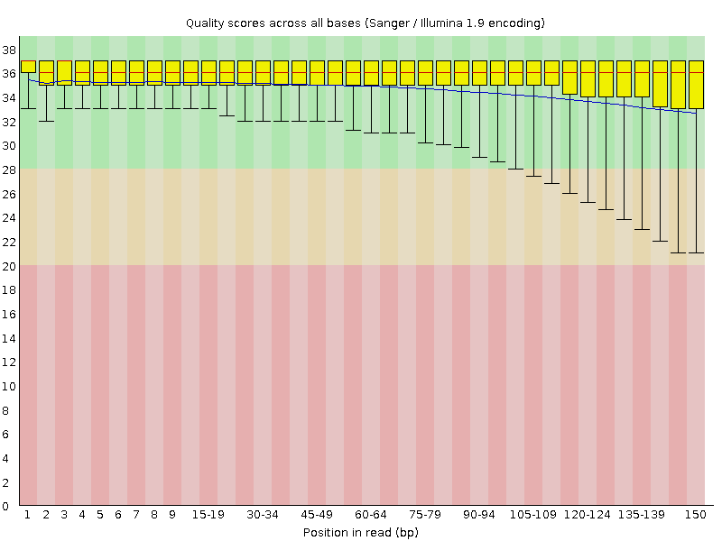
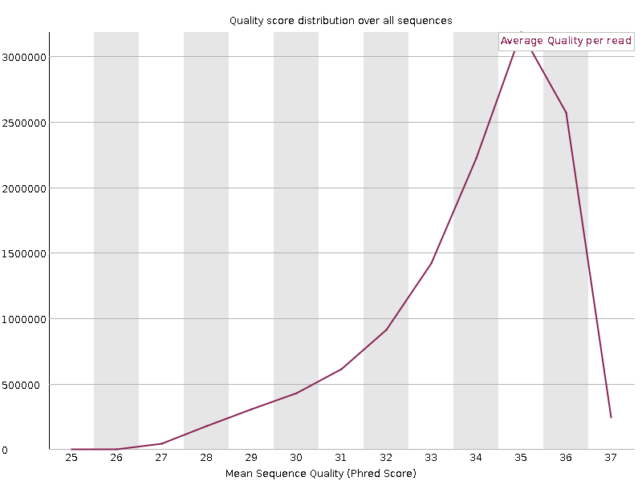
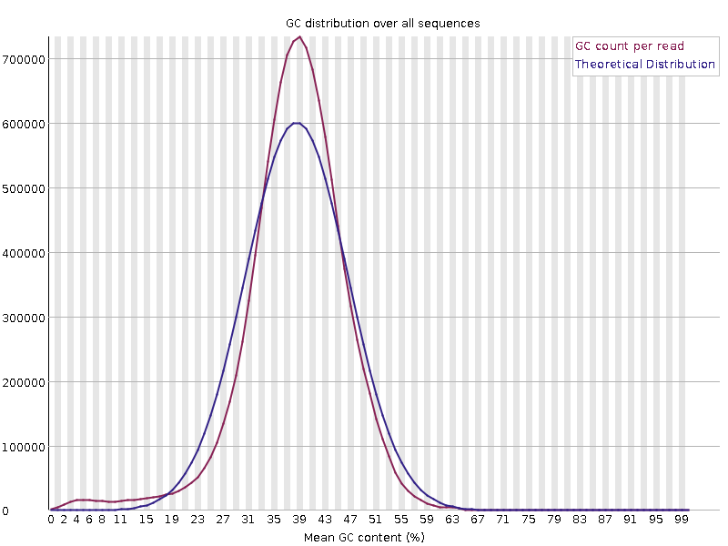
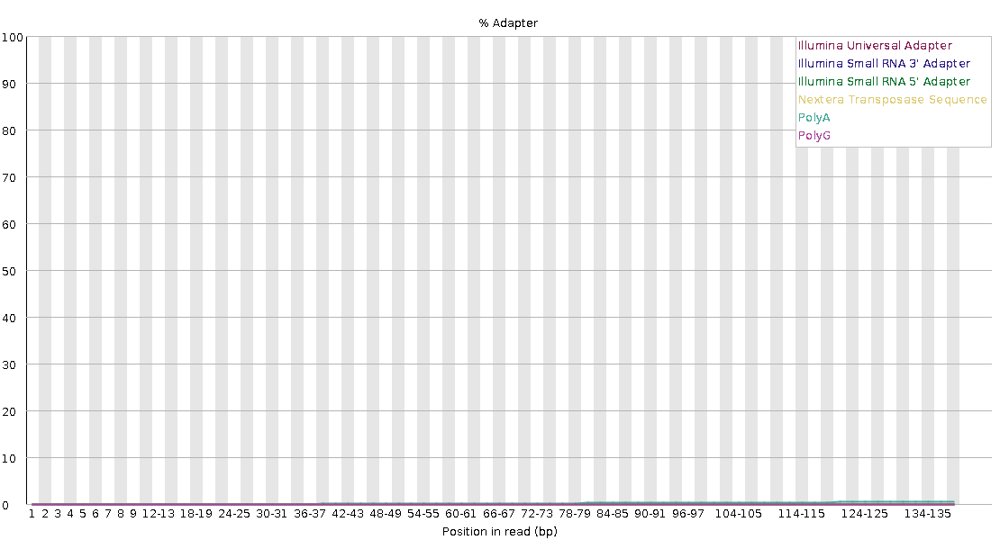
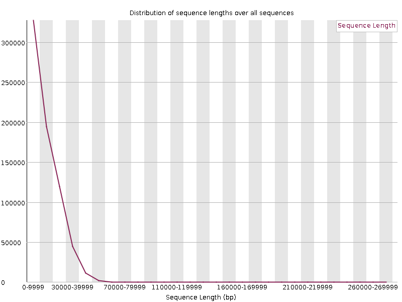
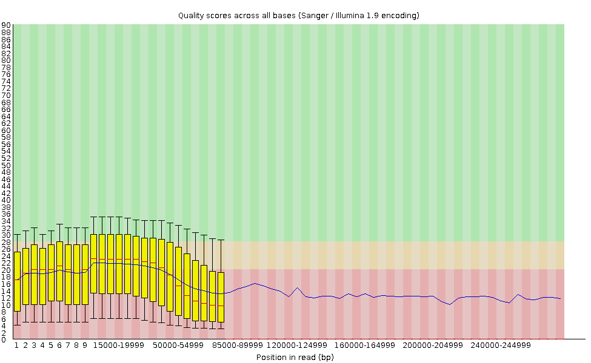

Week 2, Session 1
QC Across Four Sequencing Platforms
Last week you fetched four yeast sequencing datasets from Illumina, BGISEQ, PacBio HiFi and Oxford Nanopore. In this lab you measure the downloaded reads and use QC tools suited to short or long reads.
| Run | Platform | Library type |
|---|---|---|
| SRR27956204 | Illumina NovaSeq 6000 | Paired-end RNA-seq |
| SRR17374239 | BGISEQ-500 | Paired-end whole-genome sequencing |
| SRR18210286 | PacBio HiFi | Single-end whole-genome sequencing |
| SRR17374240 | Oxford Nanopore | Single-end whole-genome sequencing |
The Illumina run contains RNA-seq reads; the other three contain genomic reads. These are separate datasets with different BioSample records, rather than a controlled experiment sequencing the same sample on four platforms. Differences in QC reports can reflect platform, library type, sample preparation, and read processing. Use the metadata when interpreting the plots; a difference between files does not establish a platform effect.
Before You Start
Get a compute node. This lab runs real tools and does not belong on a login node.
srun --partition=batch --nodes=1 --ntasks=1 --cpus-per-task=4 \
--mem=16G --time=03:00:00 --pty bash
hostnameSet your paths:
export COURSE=/cluster/tufts/c27sp1bio0196
export MYWORK=$COURSE/$USER
export READS=$MYWORK/week-01/session-02/fetch/results/fastq
mkdir -p "$MYWORK/week-02/session-01"
cd "$MYWORK/week-02/session-01"
ls -lh "$READS"You should see six files: two paired-end runs with _1 and _2, and two single-file long-read runs. Use the samplesheet in $MYWORK/week-01/session-02/fetch/results/samplesheet/samplesheet.csv to match files to runs; filenames may contain experiment identifiers rather than the run accessions above.
If that directory is empty, your download did not finish. Use the staged copies and sort yours out afterwards:
export READS=$COURSE/shared/wk2/fallback_fastq
ls -lh "$READS"Load the software:
module load seqkit fastqc nanoplot multiqc
module listmodule load makes these programs available in your shell. SeqKit provides sequence statistics, FastQC creates read-QC reports, NanoPlot plots long-read data, and MultiQC combines existing QC results into one report. The NanoPlot command is written NanoPlot with capital letters, even though its module is named nanoplot.
Identify the Input Files
These are the filenames confirmed in the example download below. Use the fetchngs samplesheet to check the two Illumina mates, two BGISEQ mates, and single PacBio and Nanopore files. If your filenames differ, update the filename after $READS/ while keeping the variable names on the left.
ILLUMINA_R1="$READS/SRX23612877_SRR27956204_1.fastq.gz"
ILLUMINA_R2="$READS/SRX23612877_SRR27956204_2.fastq.gz"
BGISEQ_R1="$READS/SRX13548510_SRR17374239_1.fastq.gz"
BGISEQ_R2="$READS/SRX13548510_SRR17374239_2.fastq.gz"
PB="$READS/SRX14356846_SRR18210286.fastq.gz"
LONG="$READS/SRX13548509_SRR17374240.fastq.gz"
ls -lh "$ILLUMINA_R1" "$ILLUMINA_R2" "$BGISEQ_R1" "$BGISEQ_R2" "$PB" "$LONG"All six paths should point to existing files before you continue. $LONG names the Nanopore file and $PB names the PacBio file. These variables refer directly to the downloaded reads; this lab does not create a separate subset.
Part 1: Measure All Four Side by Side
1.1 One Command, Every Platform
Start with a numerical summary of every FASTQ file. SeqKit reads compressed .fastq.gz files directly, so you do not need to decompress them first.
seqkit stats -a "$READS"/*.fastq.gz| Part | Meaning |
|---|---|
seqkit stats |
Calculate sequence counts, lengths, and other statistics, with one output row per file. |
-a |
Show all available statistics, including length quartiles, N50, and FASTQ quality summaries. |
"$READS"/*.fastq.gz |
Use every filename ending in .fastq.gz in the input directory. The shell expands * to the matching filenames. |
num_seqs is the read count, sum_len is the total number of bases, and avg_len is the average read length. The command prints a table in the terminal and leaves the FASTQ files unchanged.
Fill this in from the output. One row per file.
file num_seqs sum_len avg_len N50 Q20(%) Q30(%)Example SeqKit result
This instructor-provided run processed 6 of 6 files. The tables below preserve its reported values, using short labels and filenames instead of the personal directory path. All six rows have format = FASTQ, type = DNA, and sum_gap = 0. SeqKit's DNA label describes the sequence alphabet; the Illumina libraries are still RNA-seq, as recorded in the run metadata. On a phone, swipe across the wide tables to see all columns.
| Label | Filename |
|---|---|
| Nanopore | SRX13548509_SRR17374240.fastq.gz |
| BGISEQ R1 | SRX13548510_SRR17374239_1.fastq.gz |
| BGISEQ R2 | SRX13548510_SRR17374239_2.fastq.gz |
| PacBio HiFi | SRX14356846_SRR18210286.fastq.gz |
| Illumina R1 | SRX23612877_SRR27956204_1.fastq.gz |
| Illumina R2 | SRX23612877_SRR27956204_2.fastq.gz |
Read counts and lengths. Lengths and total sequence are in bases.
| File | num_seqs | sum_len | min_len | avg_len | max_len |
|---|---|---|---|---|---|
| Nanopore | 701,791 | 9,633,074,833 | 2,000 | 13,726.4 | 276,396 |
| BGISEQ R1 | 12,142,029 | 1,821,304,350 | 150 | 150 | 150 |
| BGISEQ R2 | 12,142,029 | 1,821,304,350 | 150 | 150 | 150 |
| PacBio HiFi | 227,298 | 4,583,595,361 | 1,332 | 20,165.6 | 50,260 |
| Illumina R1 | 44,824,178 | 6,768,450,878 | 151 | 151 | 151 |
| Illumina R2 | 44,824,178 | 6,768,450,878 | 151 | 151 | 151 |
Length distribution. Q2 is the median read length. N50_num is the number of reads, starting with the longest, needed to reach at least half the total bases.
| File | Q1 | Q2 | Q3 | N50 | N50_num |
|---|---|---|---|---|---|
| Nanopore | 4,731 | 11,063 | 20,231 | 20,948 | 164,166 |
| BGISEQ R1 | 150 | 150 | 150 | 150 | 6,071,015 |
| BGISEQ R2 | 150 | 150 | 150 | 150 | 6,071,015 |
| PacBio HiFi | 15,079 | 18,738 | 23,847 | 21,020 | 84,962 |
| Illumina R1 | 151 | 151 | 151 | 151 | 22,412,089 |
| Illumina R2 | 151 | 151 | 151 | 151 | 22,412,089 |
Quality and composition. Q20(%) and Q30(%) are percentages of bases at or above those quality scores. AvgQual is SeqKit's reported average quality, GC(%) is GC percentage, and sum_n counts N bases.
| File | Q20(%) | Q30(%) | AvgQual | GC(%) | sum_n |
|---|---|---|---|---|---|
| Nanopore | 60.65 | 25.82 | 11.94 | 38 | 0 |
| BGISEQ R1 | 96.07 | 89.93 | 22.94 | 37.91 | 136,577 |
| BGISEQ R2 | 95.08 | 88.28 | 21.66 | 38.13 | 483,461 |
| PacBio HiFi | 98.47 | 96.28 | 27.46 | 37.69 | 0 |
| Illumina R1 | 97.82 | 94.29 | 26.9 | 44.89 | 88,467 |
| Illumina R2 | 97.08 | 92.99 | 25.79 | 44.63 | 55,068 |
The mate counts match: BGISEQ has 12,142,029 reads per mate, and Illumina has 44,824,178 reads per mate. Your own output should be checked rather than copied from this reference.
Question 1. Compare avg_len across the four platforms. Which two are nearly constant, and which two vary? Why?
Answer
In this result, both BGISEQ mates are exactly 150 bp and both Illumina mates are exactly 151 bp: their minimum, average, and maximum lengths are identical. Their read lengths are fixed here, not merely nearly constant.
The long-read files vary:
| Dataset | min_len (bp) | avg_len (bp) | max_len (bp) |
|---|---|---|---|
| Nanopore | 2,000 | 13,726.4 | 276,396 |
| PacBio HiFi | 1,332 | 20,165.6 | 50,260 |
Short-read length is largely set by the chosen sequencing cycles. Long-read lengths also reflect DNA fragment lengths, library preparation, size selection, and processing. The PacBio file has the longer average read in these data; the Nanopore file has the longest individual read.
1.2 Quality Is Not One Number Either
Look at the Q20(%) and Q30(%) columns.
Question 2. Rank the four datasets by their reported Q30. Does that ranking tell you which platform is best?
Answer
The observed ranking by percentage of bases with Q30 or higher is:
| Rank | Dataset | Q30(%) |
|---|---|---|
| 1 | PacBio HiFi | 96.28 |
| 2 | Illumina | 94.29 (R1), 92.99 (R2) |
| 3 | BGISEQ | 89.93 (R1), 88.28 (R2) |
| 4 | Nanopore | 25.82 |
PacBio ranks first in this output. This is a ranking of reported base qualities in these files, not a universal ranking of sequencing platforms. Read length, yield, and the biological question also matter. The Illumina dataset is RNA-seq and the others are genomic, so they serve different purposes and differ in library preparation.
For example, the longest Nanopore read is 276,396 bp, much longer than the longest PacBio read (50,260 bp), despite Nanopore's lower reported Q30 percentage. Week 3 uses the PacBio HiFi genomic reads for assembly.
1.3 Read Length as a Distribution
An average hides the shape. Look at the real distribution for one long-read file:
seqkit fx2tab converts sequence records into a tab-separated table. Here we request only read names and lengths, then summarize those lengths with the rest of the pipeline.
echo "$LONG"
seqkit fx2tab -nl "$LONG" | awk '{print $NF}' | sort -n | \
awk '{a[NR]=$1} END {
printf "min %8d\n", a[1]
printf "Q1 %8d\n", a[int(NR*0.25)]
printf "median %8d\n", a[int(NR*0.50)]
printf "Q3 %8d\n", a[int(NR*0.75)]
printf "max %8d\n", a[NR] }'| Part | Meaning |
|---|---|
seqkit fx2tab |
Write one table row for each read. |
-n |
Keep read names without printing their sequences or quality strings. |
-l |
Add each read's length in bases. |
-nl |
A shorter way to write -n -l; both options apply. |
"$LONG" |
Read the Nanopore FASTQ file selected in the setup. |
echo displays the chosen filename. Each pipe (|) passes output to the next command. The first awk extracts the final field, the read length; sort -n sorts the lengths numerically. The last awk reports the minimum, quartiles, median, and maximum. The backslash (\) continues the command on the next line.
Use the same SeqKit options for one Illumina mate file. This time, count how often each read length occurs:
seqkit fx2tab -nl "$ILLUMINA_R1" | awk '{print $NF}' | sort -n | uniq -c | head"$ILLUMINA_R1" selects the first Illumina mate file. -nl again requests names and lengths. After extracting and sorting the lengths, uniq -c counts equal adjacent values, and head shows the first ten length groups. The two output columns are the number of reads and their length in bases.
Question 3. The short-read file gives the same length for every read. Why does that make the mean a useful summary there and an incomplete one for long reads?
Answer
All 44,824,178 reads in the Illumina R1 file are 151 bp long. The length-count command therefore produces one row, with a count of 44,824,178 and a length of 151. Each BGISEQ mate similarly contains 12,142,029 reads of 150 bp. For these files, the mean describes every read's length.
The Nanopore file spans 2,000–276,396 bp, with a mean of 13,726.4 bp, a median of 11,063 bp, and an N50 of 20,948 bp. Its middle half of reads falls between Q1 = 4,731 bp and Q3 = 20,231 bp. The mean alone hides this broad distribution and the very long tail.
PacBio also varies: 1,332–50,260 bp, with a mean of 20,165.6 bp, median of 18,738 bp, and N50 of 21,020 bp. Use the distribution and N50 alongside the mean when describing the long-read files.
Checkpoint 1. You have a filled-in stats table and can describe differences between the datasets while considering both platform and library type.
Part 2: FastQC, and Where It Applies
2.1 Run It on the Short Reads Only
FastQC checks each input file for patterns such as declining base quality, adapter content, and unusual sequence composition. It creates a separate report for each mate file and does not trim or change the reads.
mkdir -p fastqc
fastqc -t 4 --outdir fastqc \
"$ILLUMINA_R1" "$ILLUMINA_R2" "$BGISEQ_R1" "$BGISEQ_R2"
ls fastqc/| Part | Meaning |
|---|---|
mkdir -p fastqc |
Create the output directory if needed; FastQC expects it to exist. |
fastqc |
Run the quality-control checks on the listed input files. |
-t 4 |
Set the processing thread limit to four, matching the four CPUs requested above. |
--outdir fastqc |
Save the reports in the fastqc/ directory. -o fastqc means the same thing. |
| The four filename variables | Analyze the two Illumina mate files and the two BGISEQ mate files. Each file gets its own report. |
ls fastqc/ |
List the reports that were created. |
For each input, expect an HTML report for viewing and a ZIP archive containing report data. The backslash after --outdir fastqc continues the command onto the next line.
View a report through OnDemand: Files > Home Directory, navigate to your week-02/session-01/fastqc/ directory, and click an .html file.
2.2 Read It Properly
Work through these panels for one Illumina sample and write down what you see.
Basic Statistics total sequences, length, %GC
Per base sequence quality where does it start dropping?
Per base sequence content skewed at the start, or all the way through?
Per sequence GC content one peak, or two?
Adapter content does it rise, and from which position?
Overrepresented sequences anything named?Question 4. Compare the Illumina and BGISEQ reports. Both are short-read platforms. Name one panel where they differ. Why should you consider library type as well as platform when interpreting that difference?
Answer
Any accurate observation supported by the reports earns credit. The Illumina run is RNA-seq, while the BGISEQ run is whole-genome sequencing. Expressed transcripts are present at different abundances, which can affect duplication and sequence composition in RNA-seq. Higher duplication alone does not establish a library failure.
Quality profiles can also reflect sequencing chemistry and read processing; adapter content depends on library preparation. Describe what differs, then explain plausible causes without assigning every difference to the platform. FastQC warnings need to be interpreted in the context of the library type.
2.3 Worked Example: BGISEQ Read 1
These figures come from the instructor-provided FastQC 0.12.1 report for SRX13548510_SRR17374239_1.fastq.gz: 12,142,029 reads, all 150 bp long. You can open the complete original report to inspect the other modules. The figures below are the original report images.
Overall finding: base quality is generally strong, and the report has nine PASS modules, one WARNING, and no FAIL modules. The warning is for the shape of the per-sequence GC distribution. There is also a wider lower-quality tail toward the ends of the reads. These findings support further inspection, rather than rejecting the dataset or trimming every read to an arbitrary length.
Quality Along the Read

Figure 1. Per-base sequence quality — PASS. Each position or position range has a red median, a yellow box containing the middle 50% of scores, and whiskers marking the 10th and 90th percentiles. The blue line is the mean. Higher scores indicate more confident base calls.
Here the median stays near Q36. The mean declines gently from about Q35 to Q33, while the lower whisker falls to about Q21 near the end. Most scores remain high, but a subset of reads has poorer-quality ends. A falling lower whisker is not the same as all reads becoming poor. Inspect R2 and downstream results before deciding whether quality trimming is useful; this plot does not justify discarding every read's last several dozen bases.
Quality Across Whole Reads

Figure 2. Per-sequence quality scores — PASS. This counts reads by their mean quality score. The largest peak is near Q35, with no large, separate peak of very low-quality reads. This supports the conclusion that the file is generally high quality, while Figure 1 shows where quality is more variable within reads. The peak of this distribution is a different summary from the single AvgQual value in the SeqKit table; do not expect those numbers to be identical.
The GC Warning

Figure 3. Per-sequence GC content — WARNING. The red curve is the observed read-GC distribution; the blue curve is FastQC's theoretical distribution. The main peak is around 38–40% GC, with a sharper peak and a small excess of very low-GC reads relative to the model. The warning concerns the distribution's shape, not a test that the organism has the wrong average GC content. Basic Statistics displays an integer GC value of 37%; the earlier SeqKit result reports 37.91% for this file.
This plot alone does not identify contamination. Genome composition, uneven representation of genomic regions, library preparation, and contamination are possible contributors to a non-model distribution. Compare R2 and, if the pattern needs further investigation, use mapping or taxonomic evidence to distinguish those explanations. The report finds no overrepresented sequences, which is useful context but does not exclude all contaminants.
Adapter Evidence

Figure 4. Adapter content — PASS. The traces for the sequences tested in this report remain close to zero, so there is no strong signal of those adapters building up at the read ends. However, the legend lists Illumina/Nextera sequences and PolyA/PolyG; it does not show a BGISEQ-specific adapter. A PASS therefore does not prove that every possible library adapter is absent. Check the actual library adapter sequences if there is other evidence of adapter contamination.
Other Findings and What to Do Next
- Duplication passes. The full report estimates that 71.03% of sequences would remain after sequence-based deduplication. This is not a unique-mapping percentage, and the remainder cannot automatically be called PCR duplicates. Repeated sequences can also arise from sequencing a small genome deeply. Do not deduplicate solely from this FastQC estimate.
- N content passes, but Ns are present. The supplied SeqKit result counts 136,577 N bases, about 0.0075% of the 1,821,304,350 bases in this mate file. A PASS means the module did not cross its warning threshold; it does not mean zero unresolved bases.
- Inspect both mates. These figures cover R1 only. Check R2 before drawing conclusions about the whole paired-end library. In Session 2, compare QC before and after any justified preprocessing and record whether the suspected issue improved.
The practical decision for this report is to keep the reads for further analysis, inspect the GC warning, and verify adapter coverage in the checks. Avoid treating a warning as a diagnosis or assuming that more trimming always gives better data.
2.4 Try It Where It Does Not Belong
Run the same FastQC checks on the Nanopore file to examine how its report behaves with long reads:
fastqc -t 4 -o fastqc "$LONG"Here -t 4 keeps the same thread limit, -o fastqc saves the report alongside the short-read reports, and "$LONG" selects the Nanopore input. This is a demonstration of tool interpretation; it does not convert or filter the reads.
Open that report. The two figures below come directly from the instructor-provided report for SRX13548509_SRR17374240.fastq.gz. Its Basic Statistics table reports 701,791 reads, with lengths from 2,000 to 276,396 bp. You can open the complete Nanopore FastQC report to inspect the other checks.

Figure 5. Read-length distribution — WARNING. Unlike the BGISEQ reads, which were all 150 bp, these reads vary greatly in length. Most lie near the left of the plot, while a small number extend far to the right. FastQC warns when read lengths are not all identical. That warning describes an expected feature of Nanopore data; it does not by itself indicate a failed sequencing run.

Figure 6. Per-base sequence quality — FAIL. Read the horizontal axis carefully: after the first few positions, labels represent large ranges of bases, rather than consecutive single bases. The blue mean line extends far beyond the yellow quality boxes. A position near 100,000 bp can only include reads at least that long; shorter reads have already ended. The far-right values therefore describe a small subset of the library, rather than all 701,791 reads.
This plot still contains information about reported base quality, but it does not follow the same group of reads from start to finish. A change in the curve can reflect both quality variation and a change in which reads contribute. Do not choose a single trimming position for every read from this plot, or conclude that all Nanopore reads are unusable because the module says FAIL.
Question 5. Why does the read-length module warn, and why is the far-right end of the quality plot difficult to interpret as a summary of the whole library?
Answer
The length warning occurs because the reads have different lengths, which is normal for this platform. At early positions, many reads contribute quality scores; at late positions, only the longest reads contribute. The changing set of reads makes this different from comparing the same positions across fixed-length 150 bp reads.
FastQC's quality thresholds are not a platform-specific test of whether this library will work for an assembly or mapping analysis. Lower reported quality may still be real and worth investigating. Next, use NanoPlot to examine read-length and read-quality distributions together, and use downstream results to judge whether filtering helps.
The lesson is to interpret the plots and thresholds in context, rather than treating every warning as a defect or dismissing every warning as harmless.
Checkpoint 2. You have FastQC reports for both short-read platforms and can explain the limitations of applying the same checks to variable-length Nanopore reads.
Part 3: The Right Tool for Long Reads
3.1 NanoPlot
NanoPlot generates plots and an HTML report, as well as a text summary. It can summarize both Nanopore and PacBio HiFi FASTQ reads; its name does not limit it to Nanopore data.
mkdir -p nanoplot
NanoPlot --fastq "$LONG" -o nanoplot -t 4 --N50 --loglength
ls nanoplot/
cat nanoplot/NanoStats.txt| Option | Meaning |
|---|---|
--fastq "$LONG" |
Read the selected Nanopore FASTQ file, including its stored quality scores. Compressed .gz input is supported. |
-o nanoplot |
Write the report, statistics, and plots into nanoplot/. |
-t 4 |
Allow up to four processing threads, matching the compute allocation. |
--N50 |
Add an N50 marker to the read-length histogram. |
--loglength |
Also produce plots with read length on a logarithmic scale. This changes the visualization, not the input reads. |
mkdir -p prepares the output folder, ls lists its contents, and cat displays the text summary. These commands inspect the output without changing the reads.
The main outputs are:
| Output | What to use it for |
|---|---|
nanoplot/NanoPlot-report.html |
Open in a browser to explore the plots and summary statistics. |
nanoplot/NanoStats.txt |
Read the numerical summary in the terminal. |
Other plot files in nanoplot/ |
Open individual plots; filenames and available formats depend on the installed version. |
Open the report. In OnDemand, choose Files and navigate to $MYWORK/week-02/session-01/nanoplot/ in your course directory. Open NanoPlot-report.html in a browser. If OnDemand downloads HTML instead of displaying it, download the output folder and open the report locally, keeping its files together.
Look for these plots:
- Read-length distribution: shows how many reads fall in each length range.
--N50adds an N50 marker; at least half of the sequenced bases are in reads at least this long. - Read-quality distribution: shows the spread of average quality scores across reads, when available.
- Read length versus average quality: shows whether longer and shorter reads have different reported qualities. The report may show points or a density view.
--loglength adds plots with a logarithmic length axis, making broad length ranges easier to compare. Some quality plots may be skipped when the scores have no variation. These plots summarize the scores stored in the FASTQ file; they do not independently measure sequencing accuracy.
3.2 Five Numbers That Matter
From NanoStats.txt, record:
Mean read length
Median read length
Read length N50
Mean read quality
Number of readsQuestion 6. NanoPlot reports both mean and median read length, and they differ substantially. Which is larger, and what does that tell you about the run?
Answer
Check the mean and median in your NanoPlot report. As a length cross-check, the instructor's SeqKit results show:
| Dataset | Mean length (bp) | Median length (bp) |
|---|---|---|
| Nanopore | 13,726.4 | 11,063 |
| PacBio HiFi | 20,165.6 | 18,738 |
The mean exceeds the median in both files, consistent with longer reads pulling the average upward. The maximum lengths and plots help show the tail. N50 summarizes where the bases lie, rather than the length of the middle read. These values come from SeqKit; record the values produced by your own NanoPlot run for this question.
3.3 Compare the Two Long-Read Platforms
Run NanoPlot on the PacBio file as well. Use a separate output directory so its report is easy to distinguish from the Nanopore report:
mkdir -p nanoplot_pb
NanoPlot --fastq "$PB" -o nanoplot_pb -t 4 --N50 --loglength
grep -E 'Mean read length|Median read|N50|Mean read quality' nanoplot/NanoStats.txt nanoplot_pb/NanoStats.txtThis command uses the same NanoPlot options: --fastq "$PB" selects the PacBio file, -o nanoplot_pb chooses its output folder, -t 4 sets the thread limit, --N50 marks N50, and --loglength adds logarithmic length plots. Both runs therefore use the same plot settings. The final grep -E command selects matching summary lines from the two NanoStats.txt files; it does not run NanoPlot again.
Open nanoplot_pb/NanoPlot-report.html for the PacBio report, using the same OnDemand or download steps as above. Compare the read-length and quality plots with those in nanoplot/NanoPlot-report.html, as well as the numbers in NanoStats.txt.
Question 7. Both are long-read platforms. Which has higher read quality, and which has longer reads? What does that trade-off mean for choosing between them?
Answer
Use your NanoPlot plots and statistics to compare the two files. The instructor's SeqKit output provides a reference:
| Metric | PacBio HiFi | Nanopore |
|---|---|---|
| Q30(%) | 96.28 | 25.82 |
| SeqKit AvgQual | 27.46 | 11.94 |
| Average length (bp) | 20,165.6 | 13,726.4 |
| N50 (bp) | 21,020 | 20,948 |
| Maximum length (bp) | 50,260 | 276,396 |
PacBio has higher reported quality and a longer average read in these data. The N50 values are similar, with PacBio slightly higher. Nanopore has the longest individual read. Specify the length metric rather than saying one platform simply has longer reads.
HiFi consensus sequencing supports high per-base accuracy. Very long Nanopore reads can help span long repeats. The choice depends on the analysis, and these separate libraries do not establish a universal platform ranking. Quality values above are from SeqKit, not substituted for NanoPlot's own summary.
Checkpoint 3. You have opened both NanoPlot HTML reports, compared their plots and summary statistics, and can describe the trade-off between the two datasets.
Part 4: MultiQC — Compare All Datasets in One Report
The worked example in Section 2.3 explains one mate file in detail. MultiQC brings results from many files together, making differences easier to see. It reads the QC outputs you have already produced; it does not rerun FastQC or NanoPlot, or change the FASTQ files.
Here we combine four FastQC reports (Illumina R1/R2 and BGISEQ R1/R2) with two NanoPlot summaries (Nanopore and PacBio HiFi). These represent four datasets, not six independent biological samples: R1 and R2 are mates from the same paired-end library.
4.1 Build the Combined Report
Run this after completing both the FastQC and NanoPlot sections:
cd "$MYWORK/week-02/session-01"
multiqc --force --dirs --dirs-depth 1 \
--title "Week 2: QC across four platforms" --outdir multiqc \
fastqc/*SRR27956204*_fastqc.zip \
fastqc/*SRR17374239*_fastqc.zip \
nanoplot/NanoStats.txt nanoplot_pb/NanoStats.txt| Part | Meaning |
|---|---|
multiqc |
Collect supported QC results and build a combined report. |
--force |
Replace the previous report when you rerun this command. |
--dirs --dirs-depth 1 |
Add the containing folder to report labels, keeping the two files named NanoStats.txt distinct. |
--title |
Set the report title. |
--outdir multiqc |
Write the report and its data into multiqc/. |
The two fastqc/*..._fastqc.zip patterns |
Select the two mate reports for each short-read run. The stars match the variable parts of the filenames. |
The two NanoStats.txt paths |
Include the long-read summary statistics through MultiQC's NanoStat module. |
Keep the FastQC ZIP files: MultiQC reads their data, rather than the standalone FastQC HTML pages. These accession patterns also exclude the Nanopore FastQC report created only for the tool-choice demonstration. If your report filenames differ, adjust the patterns to select the four short-read ZIP files.
Open week-02/session-01/multiqc/multiqc_report.html through OnDemand Files, or download it and open it in a browser. Look for both FastQC and NanoStat sections, and confirm that both long-read datasets and all four short-read inputs are represented. Some versions group mates in the display; expand the group to inspect R1 and R2.
4.2 Read the Report as a Comparison
- General Statistics: compare read counts, GC content, duplication and read N50 where available. Empty cells can mean that a tool does not report that metric; they do not mean zero.
- FastQC plots: compare the quality curves, GC distributions, adapter content and warning flags across the short-read files. Check whether an issue affects one mate, both mates, or both libraries. Use the report's sample controls to focus on a library.
- NanoStat summaries: compare long-read lengths, N50 and quality. MultiQC collects summary statistics; keep the original NanoPlot reports for their detailed length and quality plots.
Use the metadata when explaining differences. For example, the supplied SeqKit results show about 45% GC for Illumina RNA-seq and 38% for BGISEQ genomic reads. RNA-seq samples expressed transcripts, so the same species need not give the same GC percentage in both libraries. A difference is a reason to investigate, not a contamination diagnosis.
Checkpoint 4. You have one report containing QC results from all four datasets and can describe one difference between them. In Session 2, Part 3, you will extend the comparison to reads before and after preprocessing.
Takeaways
Measure every dataset the same way first. stats prints one summary row per file, -a includes the additional metrics, and the filename pattern selects all input FASTQs:
seqkit stats -a "$READS"/*.fastq.gzUse FastQC for short reads. -t 4 sets its thread limit, -o fastqc selects the report folder, and the remaining arguments list the four short-read files:
fastqc -t 4 -o fastqc "$ILLUMINA_R1" "$ILLUMINA_R2" "$BGISEQ_R1" "$BGISEQ_R2"Use NanoPlot for long reads. --fastq names the input, -o names the output folder, -t 4 sets the thread limit, and --N50 adds the N50 marker:
NanoPlot --fastq "$LONG" -o nanoplot -t 4 --N50Combine QC outputs with MultiQC to compare datasets, then return to the individual reports when you need more detail. MultiQC summarizes existing results; it does not replace the platform-appropriate QC tools.
Three things to carry forward:
- Interpret QC with the metadata. The Illumina reads are RNA-seq; the BGISEQ, PacBio and Nanopore reads are genomic. Platform, library preparation and read processing all matter.
- Match QC interpretation to the read type. FastQC flags need context for variable-length long reads; use NanoPlot to examine their length and quality distributions.
- No platform is best. Accuracy, length, throughput and turnaround trade against each other, and which one you need is a property of your question.
Dataset Records and QC Reference
- Illumina RNA-seq: SRR27956204
- BGISEQ genomic reads: SRR17374239
- PacBio genomic reads: SRR18210286
- Nanopore genomic reads: SRR17374240
- FastQC: duplication and RNA-seq libraries
- FastQC: interpreting per-base quality
- FastQC: interpreting per-sequence quality
- FastQC: read-length warnings
- FastQC: GC-content warnings
- FastQC: adapter-content checks
- NanoPlot documentation and output descriptions
- SeqKit command and parameter reference
- FastQC installation and command-line usage
- MultiQC: FastQC input files
- MultiQC: NanoStat and NanoPlot summaries
- MultiQC: running reports and distinguishing sample names